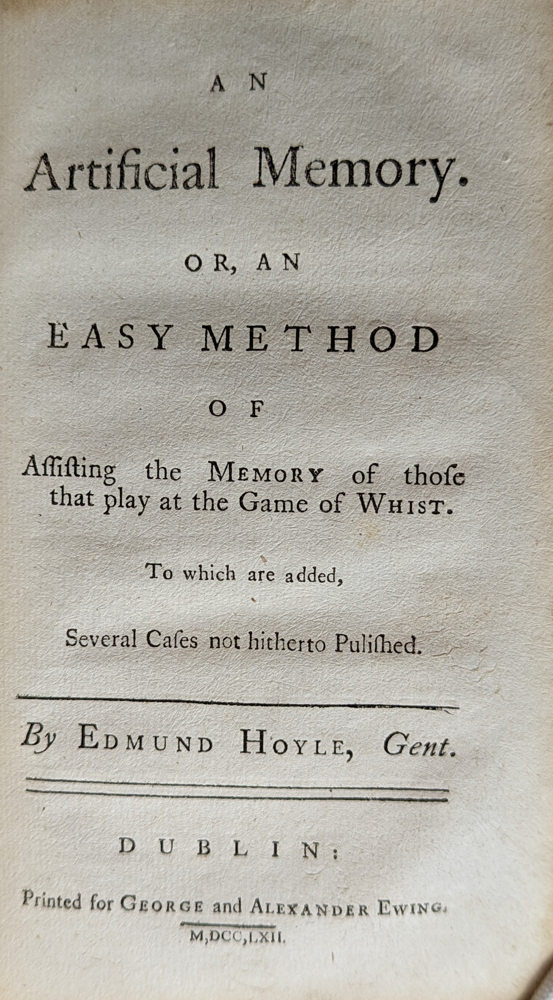

A Descriptive Bibliography of Edmond Hoyle
Copyright © 2014-26 by David Levy
(page updated 2025-03-28)User Guide
Memory.D.3*
An Artificial Memory at the Game of Whist, printed for George and Alexander Ewing, third Dublin edition, 1762.
| Collation: |
12o: A6 [$½ signed]; 6 leaves, pp. [1–2] 3–12 |
| Section Title An Artifical Memory |
 |
AN | Artificial Memory. | OR, AN | EASY METHOD | OF |
Aſſiſting the Memory of thoſe | that play at the Game of Whist. | To which are added, | Several Caſes not hitherto Publiſhed. | [rule]
| By Edmund Hoyle, Gent. | [double rule] | DUBLIN: | Printed for George and Alexander Ewing | [short rule] | M,DCC,LXII. |
| Contents: |
Signature (Page) Reference |
Contents |
Signature (Page) Reference |
Running Titles |
| A1r (1) |
section title Memory |
|
|
| A1v (2) |
blank |
|
|
| A2r–A6v (3–12) |
‘[double rule] | AN | Artificial Memory. | OR, | An eaſy Method of
aſſiſting the Memory | of thoſe that play at the Game of | Whist. | [...]’ |
A2v–A6r (4–11) |
‘An Artificial | MEMORY.’ |
|
|
A6v (12) |
‘An Artificial, &c.’ |
| Publisher: |
George and Alexander Ewing |
| References: |
ESTC T118624 |
| Copies Seen in Collections: |
D [Dublin1761(21)] (see Ewing.D); L [1607/4733] (ECCO) (see Ewing.D); L [1607/527] (see Ewing.D); O [Jessel f.574] (see Ewing.D); NvLN [GV1241.H86 1761] (see Ewing.D); OCl [789.87H F61D] (see Ewing.D); TNJ [GV1241.H8P 1761] (see Ewing.D); Levy [1745] (see Ewing.D); Levy [1804] (see Ewing.D) |
| Other Copies in Collections: |
C [Hib.7.761.25] (see Ewing.D); HAG [KW 364 G 168] (see Ewing.D); LU-S [GV1241.H86 1761] (see Ewing.D); NNStJ [GV1241.H86 1761] (see Ewing.D); NNU-F [GV1241.H6 1761] (see Ewing.D); NjP [42845.479.31] (see Ewing.D); RP [795 H868 1761 SpecColT] (see Ewing.D) |
| Notes: |
It appears that An Artifical Memory, was always published as a part of Whist.D.5. |
Home